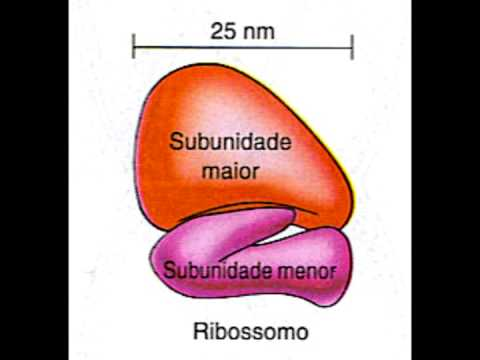

Os ribossomos são pequenos grânulos encontrados em células procariontes e eucariontes, essenciais para a síntese de proteínas. Eles atuam como as fábricas de proteínas da célula, onde o RNA mensageiro (mRNA) é traduzido para formar cadeias de aminoácidos, resultando em proteínas que desempenham funções vitais, como catalisar reações e estruturar a célula.

Os ribossomos podem estar livres no citoplasma ou ligados ao retículo endoplasmático rugoso, dependendo da proteína que estão sintetizando. Através de ligações peptídicas, eles garantem que a célula produza as proteínas necessárias para suas atividades.